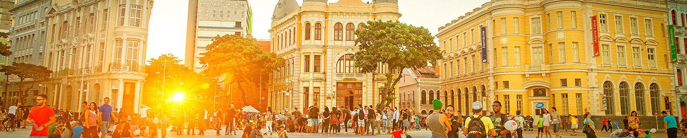

Marco zero de Recife
A Praça do Marco Zero, também conhecida como Praça do Rio Branco, localizada no coração desse bairro, é onde podem ser vistos alguns reflexos de todos esses momentos, de modo que no entorno estão localizados monumentos históricos importantes. Após ter permanecido submerso até meados do século 18, por ser a rota de entrada pelo mar, o Marco Zero de Recife foi oficialmente inaugurado em 31 de janeiro de 1938. Nos anos 1990, o entorno também passou por reformas que buscaram revitalizar a área portuária, o que implicou a retirada de parte da cobertura vegetal que ali existia. Com isso, os antigos casarões deram lugar a novos estabelecimentos e avenidas.